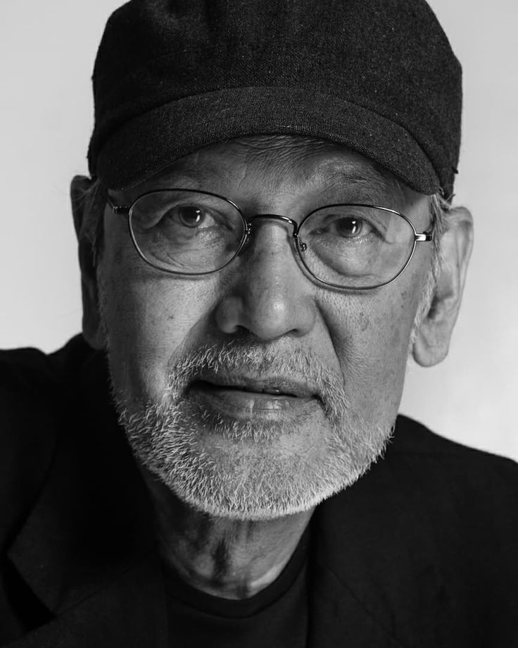
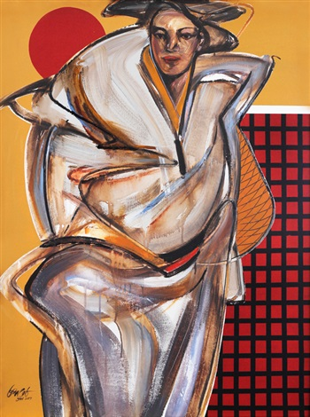
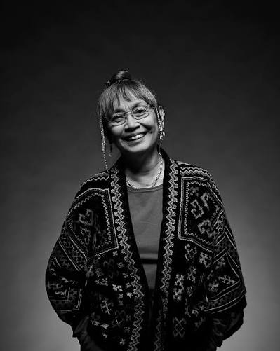
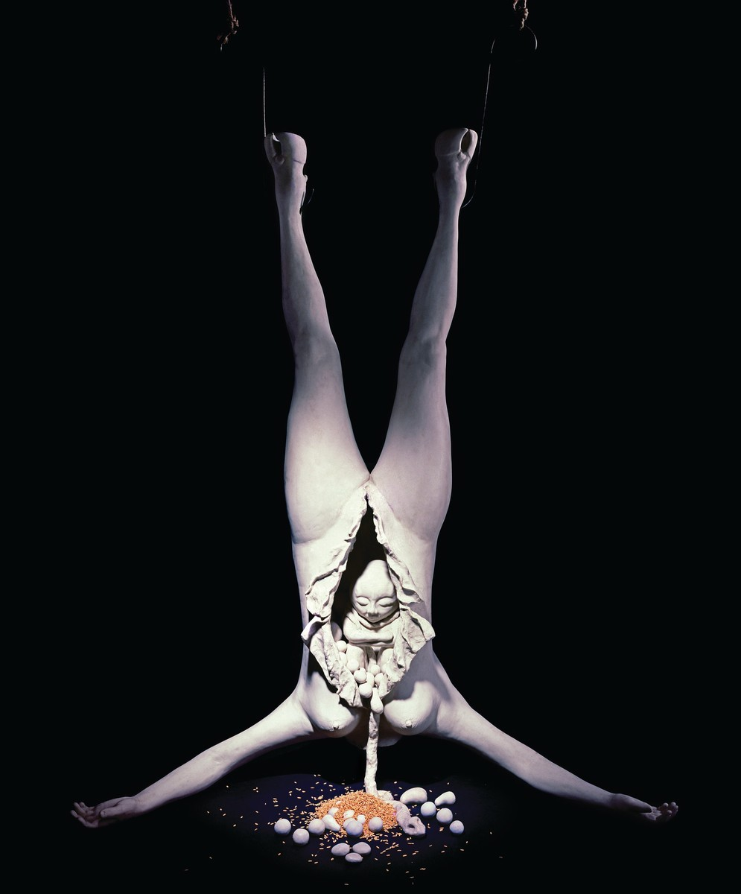
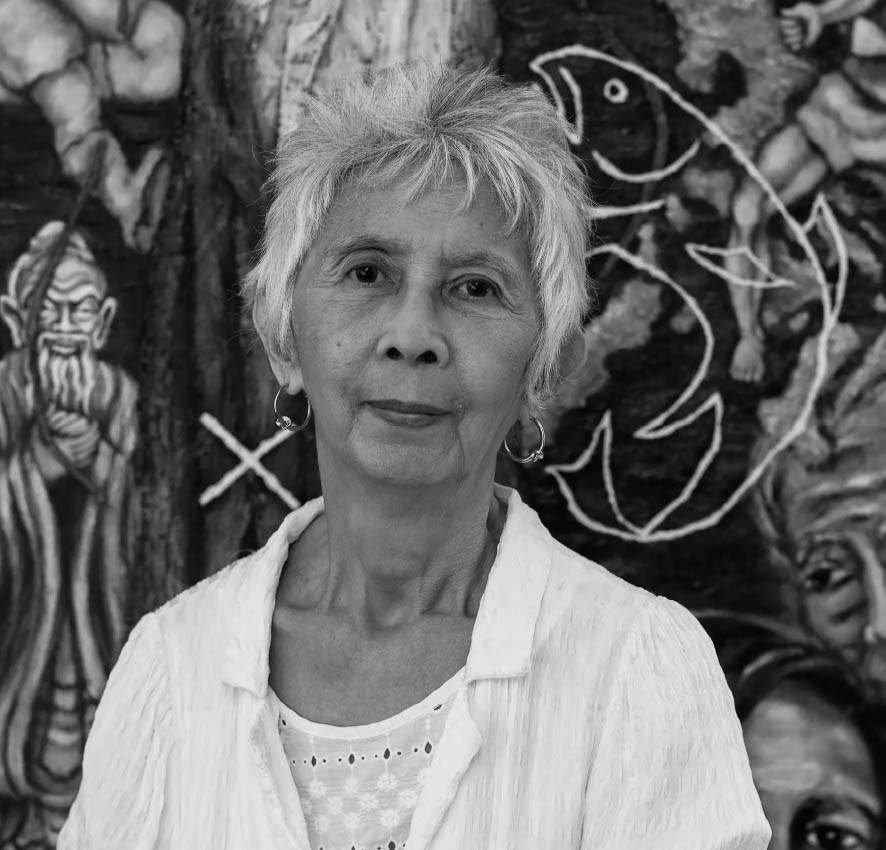
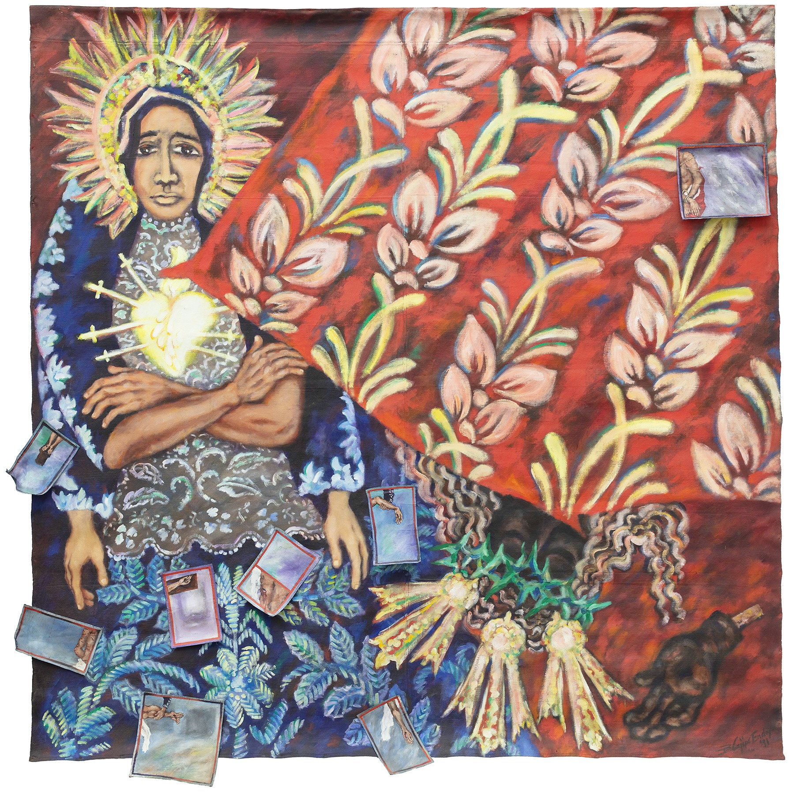
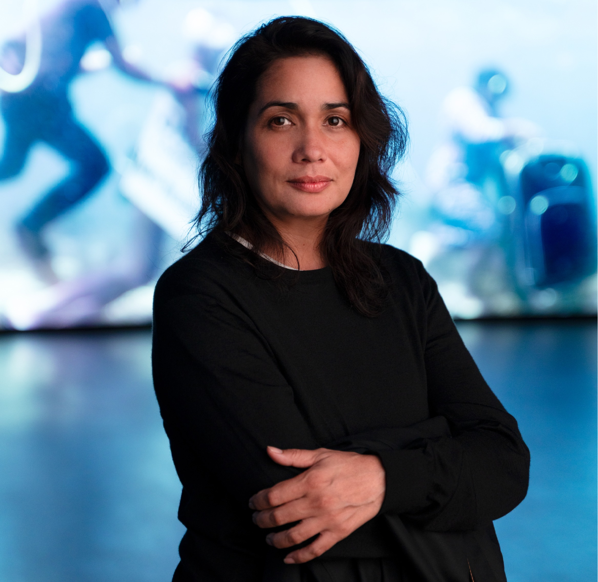

Artists and Artworks
Benedicto Cabrera

Also known as BenCab, a preeminent Filipino painter for his generation. His work consists of women or men wraped in swirling, bundled fabrics and capes.
Born April 10, 1942 in Malabon, Philippines
Sabel,1966

Oil on Canvas
100 x 80 cm
One of many works from the Sabel series. In this artwork showcases a woman wrapped in white fabric.
Agnes Arellano

Renowned Filipino sculpture, educator, and cultural organizer based in Quezon City. Studied psychology at the University of the Philippines. After graduation in 1971 she increased her further studies and enrolled in Clinical Psychology at the Ateneo de Manila for her master’s degrees. Unfortunately the Martial Law that started in 1972 imposed a strict travel ban so the government did allow pilgrimages to sacred sites in Europe during the Holy Roman Catholic Year. Thus, she got exposed to the western art in which she used for inspiration as she returned back to the Philippines to study the Fine Arts, majoring in sculpture in 1979.
Born November 21, 1949 in San Juan, Rizal
Carcass-Cornucopia, 1987

Cold-cast marble, unhulled rice, metal hooks, abaca rope
182.8 x 130 x 80 cm
A sculpture of a woman that is hung by her feet with a baby peeking out from the womb as rice and organs spill out as well.Imelda Cajipe Endaya

About the artist: National Artist of the Philippines for Visual Arts and the first woman to receive the distinction in the field.
Born November 21, 1949 in San Juan, Rizal
Tutol ni Dolorosa

Acrylic on canvas
199.5 x 201.5 cm
The painting depicts a woman cloaked in the attire of the Virgin Mary as to reference the Spanish colonizers imposing the catholic ideal of a docile, silently suffering woman, and the destruction of pre-colonial culture that follows this kind of erasure. The word “Tutol” means to object or protest. As such the translation for this piece is called The Protest of Dolorosa.
Martha Atienza

Born November 21, 1949 in San Juan, Rizal
Tutol ni Dolorosa
Acrylic on canvas
199.5 x 201.5 cm